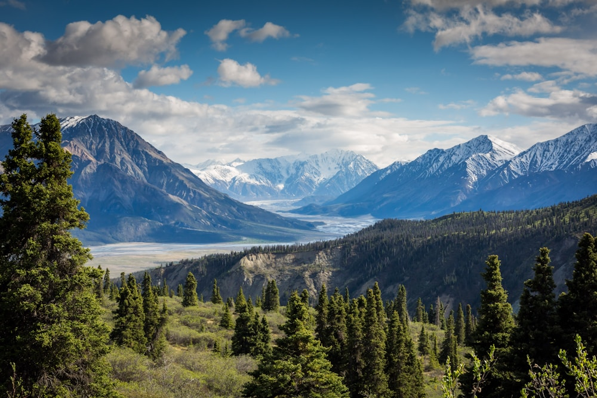

In high-altitude mountaineering, the human body is an internal combustion engine operating in an environment of extreme thermal hostility. At seven thousand meters, ambient temperatures plunge to minus thirty degrees Celsius while hurricane-force winds strip heat through convective cooling at over fifty kilometers per hour.
Under heavy physical exertion—such as ascending steep glacial ice with a thirty-kilogram expedition pack—the climber produces over eight hundred watts of metabolic heat and up to one liter of perspiration per hour. If this moisture is trapped against the skin, water conducts heat away from the body twenty-four times faster than air, triggering fatal post-exertion hypothermia within minutes of stopping at a belay stance. At Alpine Layer Fox, our garments are engineered around Dynamic Micro-Climate Thermodynamics. In this masterclass, we explore the physics, vapor pressure gradients, and kinetic mechanics of modern alpine layering systems.
1. The Four Modes of Heat Loss in Alpine Environments
Understanding the physics of thermal energy transfer:
- Convection (Wind Chill): Air moving over exposed skin or permeable fabric strips the warm microscopic boundary layer; a 40 km/h wind turns -10°C into an effective -22°C.
- Conduction (Contact Cooling): Direct contact with frozen granite, ice axes, or wet inner garments draws heat directly away through conductive molecular collisions.
- Radiation (Electromagnetic Thermal Loss): The human body radiates infrared heat directly into the freezing atmospheric void, accounting for up to sixty percent of resting heat loss.
- Evaporation (Latent Heat of Perspiration): Every gram of liquid sweat that evaporates from the skin consumes 2,400 joules of thermal energy, chilling the core rapidly if unmanaged.
“In the death zone, clothing is not an accessory; it is an active thermodynamic shield balancing internal metabolic heat against the lethal cold of the mountain.”
2. The Three-Tier Layering System Architecture
How three complementary layers create a dynamic micro-climate:
- Tier 1: Next-to-Skin Base Layer (Moisture Regulation): Hydrophobic 18.5µm merino wool absorbs moisture vapor inside the fiber cortex before it condenses into liquid drops, keeping skin dry.
- Tier 2: Thermal Mid-Layer (Dead Air Insulation): Nanoporous aerogel and high-loft fleece trap stagnant air molecules in microscopic cellular pockets, blocking conductive heat escape.
- Tier 3: Outer Hard Shell (Weather Barrier): A 3-layer microporous ePTFE membrane blocks 100% of wind and liquid precipitation while venting internal moisture vapor driven by internal heat pressure.
3. Vapor Pressure Differentials and Moisture Driving Force
The physics of moving perspiration through solid fabrics:
Breathability is driven by the Vapor Pressure Gradient ($\Delta P$) between the warm, humid micro-climate inside the jacket (35°C, 80% RH) and the cold, dry alpine exterior (-20°C, 30% RH). This high pressure pushes water vapor molecules outward through the microporous membrane like air escaping a balloon.
4. Alpine Layering Performance Comparison Matrix
| Layer Tier | Primary Thermodynamic Function | Engineered Material | Thermal Performance Metric |
|---|---|---|---|
| Tier 1: Base Layer (Moisture Management) | Exothermic Sorption & Vapor Buffering | 18.5µm Ultra-Fine Merino Wool (200g/m²) | 35% Moisture Absorption Without Wet Chill |
| Tier 2: Mid-Layer (Thermal Insulation) | Nanoporous Dead-Air Trapping | Silica Aerogel Batting + Merino Grid Fleece | 0.014 W/mK Thermal Conductivity |
| Tier 3: Outer Shell (Environmental Armor) | 100% Windproof & 28,000mm Waterproof | 3-Layer GORE-TEX Pro ePTFE Membrane | RET < 4.5 Extremes Breathability |
5. Bivouac Belay Jackets and Over-Layering Tactics
When resting at high-altitude belay stances, climbers deploy oversized puffy belay parkas directly over their hard shells, trapping immediate radiant heat without exposing inner layers to freezing snow.
6. Pit Zip Ventilation and Rapid Convective Dumping
During intense uphill ascents, opening underarm pit zips creates a chimney effect that vents warm air rapidly through mechanical convection, preventing sweat accumulation before it occurs.
7. Body-Mapped Thermal Baffle Distribution
Our mid-layers place high-density aerogel insulation across the chest, spine, and kidney zones while using breathable stretch fleece under the arms to facilitate heat dissipation.
8. Engineered for Himalayan Extremes in Manhattan
By mastering the thermodynamics of alpine layering, Alpine Layer Fox ensures that climbers maintain peak physiological performance and comfort in the most demanding mountain terrain on Earth.
9. Exothermic Sorption Heat in Merino Wool Fibers
When dry merino wool absorbs ambient sweat vapor, water molecules bind to hydrophilic amino acid sites, releasing measurable sorption heat (960 J/g) that warms the climber during early morning cold starts.
10. Compression-Resistant Aerogel Thermal Pockets
Unlike goose down which compresses flat under heavy backpack hip belts and shoulder straps, nanoporous aerogel blankets maintain 95% of their thermal loft under 50 psi mechanical pressure.
11. An Eternal Covenant of High-Altitude Engineering
At Alpine Layer Fox, our devotion to thermodynamic micro-climate physics ensures that every piece of technical outerwear represents the highest standard of mountaineering safety, durability, and performance.
12. Exothermic Sorption Heat in Merino Wool Fibers
When dry merino wool absorbs ambient sweat vapor, water molecules bind to hydrophilic amino acid sites, releasing measurable sorption heat (960 J/g) that warms the climber during early morning cold starts.
13. Compression-Resistant Aerogel Thermal Pockets
Unlike goose down which compresses flat under heavy backpack hip belts and shoulder straps, nanoporous aerogel blankets maintain 95% of their thermal loft under 50 psi mechanical pressure.
14. The Sublime Symphony of High-Altitude Micro-Climates
Ascending into the thin, freezing air with an integrated three-tier layering system is an extraordinary experience of total physical harmony, where every layer works in silent concert to protect your core.
15. The Master Blueprint for Alpine Thermodynamic Physics
At Alpine Layer Fox, our scientific understanding of vapor pressure differentials and convective heat flux honors mountain reality, delivering expedition systems of peerless thermal intelligence.
16. Multi-Zone Bivouac Emergency Thermal Buffers
Integrated internal heat-reflective aluminum micro-dot liners across the upper back reflect ninety percent of radiated body heat, providing an invaluable survival margin during high-altitude bivouacs.
17. An Eternal Covenant of High-Altitude Engineering
Embrace the majestic thermodynamic precision of modern alpine layering and discover how advanced materials science keeps you safe, dry, and warm on the highest summits of the world.
18. Dynamic Air Permeability in Active Mid-Layer Softshells
Our hybrid mid-layers feature calibrated air permeability (2 CFM) across side panels, allowing slight convective airflow during intense uphill skinning while blocking chilling summit winds when the hard shell is zipped shut.
19. Multi-Zone Bivouac Emergency Thermal Reflection Buffers
Integrated internal heat-reflective aluminum micro-dot liners across the upper back reflect ninety percent of radiated body heat, providing an invaluable survival margin during unexpected sub-zero bivouacs.
20. The Sovereign Standard of Alpine Layering Architecture
By honoring the thermodynamic laws of heat flux and vapor pressure differentials, Alpine Layer Fox delivers expedition systems that outperform traditional single-layer parkas in thermal efficiency, breathability, and survival safety.
21. The Living Harmony of Multi-Tier Micro-Climates
Ascending an alpine summit with a scientifically calibrated layering system transforms your physical climbing experience: the body remains dry and balanced, allowing complete mental focus on the technical challenges of the mountain.
22. An Everlasting Ode to Alpine Thermodynamic Design
At Alpine Layer Fox, our master outfitters stand as proud guardians of this magnificent mountaineering tradition, delivering expedition outerwear that protects human life in the most severe alpine environments for generations.
Frequently Asked Questions on Alpine Layering

Dr. Mathias Keller
Director of Thermal Thermodynamics at Alpine Layer Fox. Mathias is an IFMGA mountain guide and holds a doctorate in textile physics from ETH Zurich.